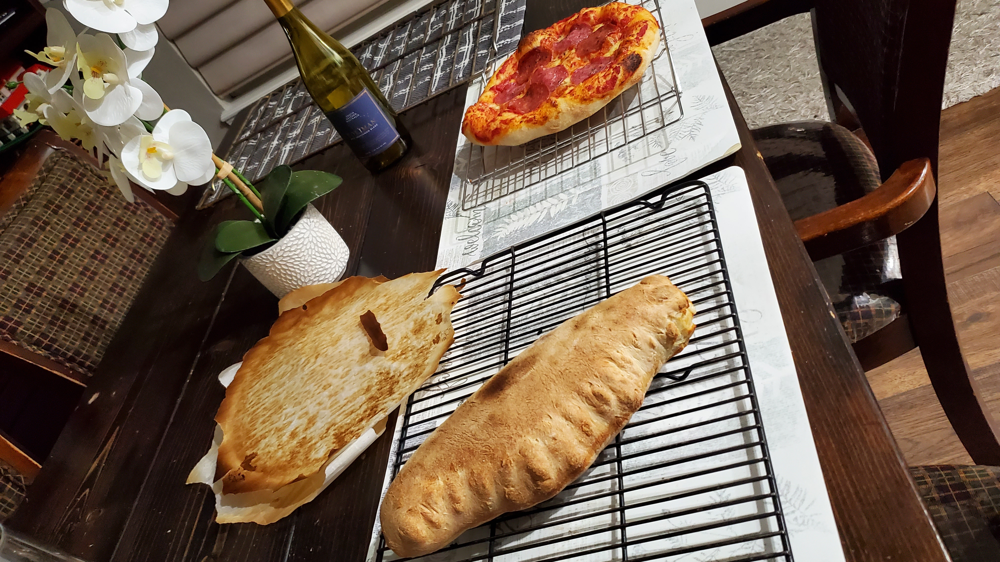

With the love of eating good food comes the long and ardous task of learning to make good food. This all started with a baking sheet and a mixing bowl in my kitchen. After months of practice, a lot of failure and a few equipment upgrades, came about my first real pizza.
With the love of eating good food comes the long and ardous task of learning to make good food. This all started with a baking sheet and a mixing bowl in my kitchen. After months of practice, a lot of failure and a few equipment upgrades, came about my first real pizza.
 I was hooked, and despite the long time investment for each batch of pizza, I was only getting better. I went from spending over 3 hours in the kitchen to make a batch of 6 pizzas, to being able to do it in just over 1.
I'd like to take this skill one day near or after retirement and open a little pizza place during the weekends. But even if that never happens, I'll still always enjoy making pizza at home.